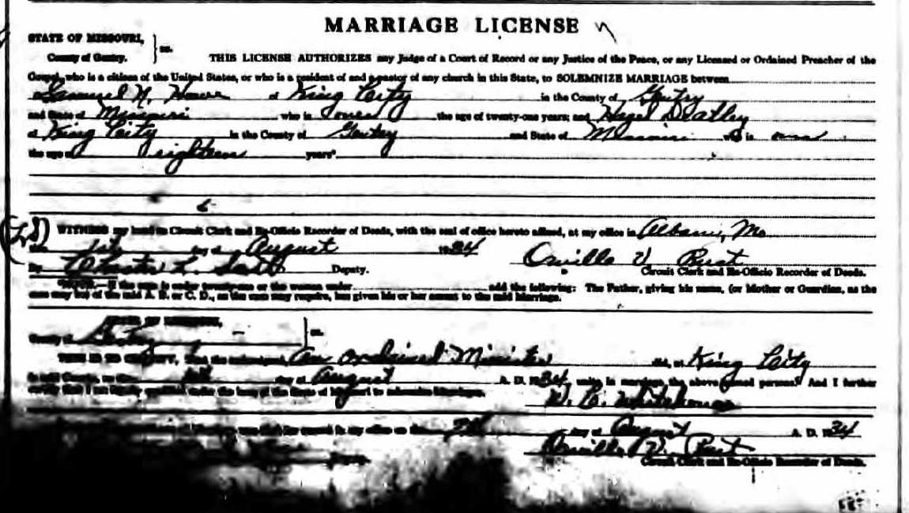

Hazel Fern Howe (née Deatley) 1911 - 1974
[ Home ] | [ Calendar ] | [ Surnames Index ] | [ Census Index ] | [ Family History ]Hazel Deatley, the wife of Samuel Noble Howe (the fourth cousin twice-removed on the mother's side of Nigel Horne), was born in DeKalb, Missouri, USA on Dec 16, 19111 and married Samuel (a farmer with whom she had 1 child, Samuel Kenneth) in King City, Gentry, Missouri, USA around 1934. On Apr 1, 1940, she was living in Jackson, Missouri2.
She died in Oct 1974 in King City1.
Children
- Samuel Kenneth was born on May 31, 1938
Citations
- Social Security Death Index - Findmypast
- US Census 1940 - Findmypast (was age 28 and the wife of the head of the household)
Media
Samuel Howe - Hazel Deatley - marriage licence

US Census 1940 - USC/1940/1506998882
Social Security Death Index - USBMD/SSDI/498424696
Family Tree

Generated by ged2site. Last updated on Jun 11, 2024